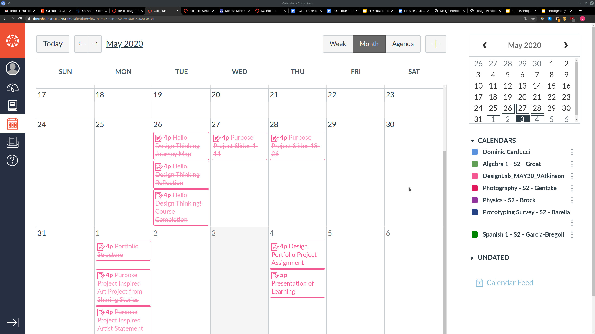
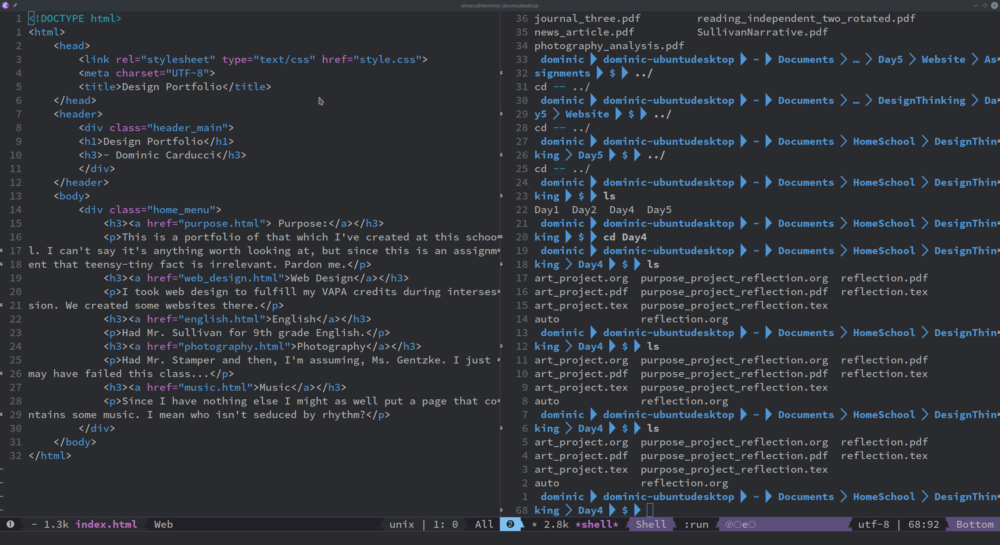
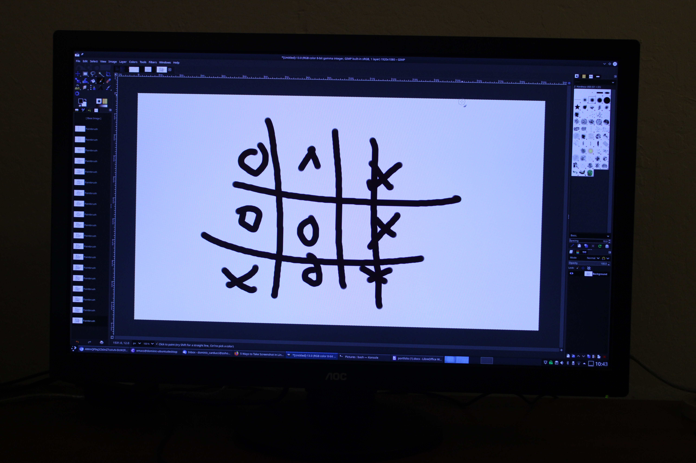
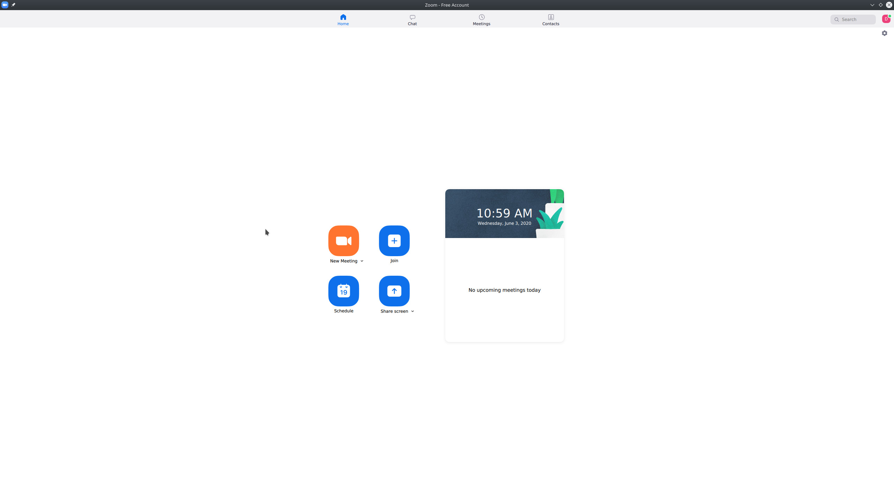

The first day we met up as an entire grade to discuss the two week class.
Calendar for the class.
We took an online class on design thinking.
We had to build a portfolio in the format of a website.
Was a virtual class so I spent the majority of it at the keyboard.
When we were done sharing me and someone else played tik tak toe.
We had to write a few things and usually when I write I like to do the draft on paper.
We met everyday on Zoom where the teacher introduced us to our assignment for the day.
Mr. Fenner, the chemistry teacher, taught this class.
All of us did a project where we had to reach out to somebody or some group that wasn't getting enough empathy.
Mr. Groat, who was my math teacher, taught the board game design class.
We split into groups to design a board game.
Can't say I enjoyed these design labs all that much. Didn't learn anything from the teacher which she explicitly taught. Everything was by myself, AGAIN! I'm getting tired of relying on myself. I know that was much of the reason I came to this school to force myself to be independent, but over time it just gets ridiculous. I learned about a teacher I will have next year, regrettably, about video editing, practice photography, and beamer.